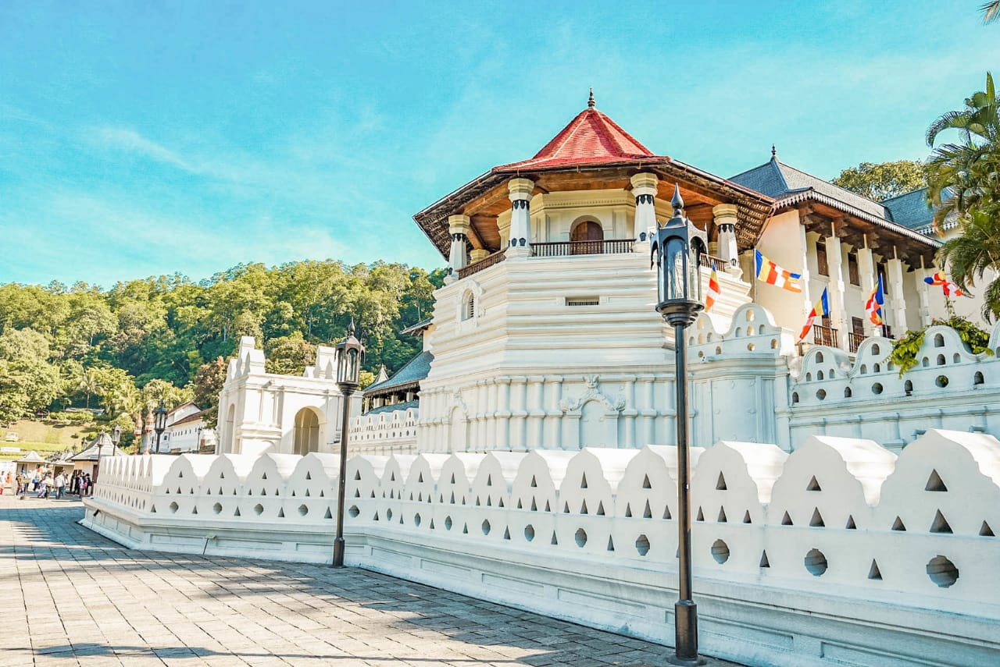

Kandy
Kandy is a large city in central Sri Lanka. It's set on a plateau surrounded by mountains, which are home to tea plantations and biodiverse rainforest. The city's heart is scenic Kandy Lake (Bogambara Lake), which is popular for strolling. Kandy is famed for sacred Buddhist sites, including the Temple of the Tooth (Sri Dalada Maligawa) shrine, celebrated with the grand Esala Perahera annual procession. And it has it's own museum too! And the famous Peradeniya Botanical Park is located in this district as well so you can have a woderful walk among the flowers!
